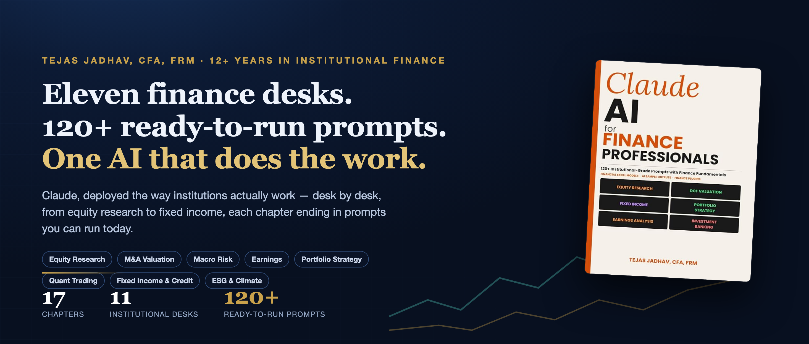
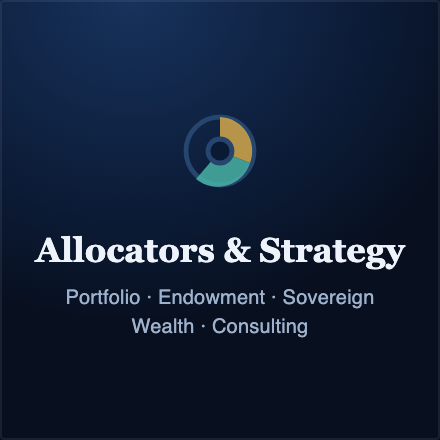
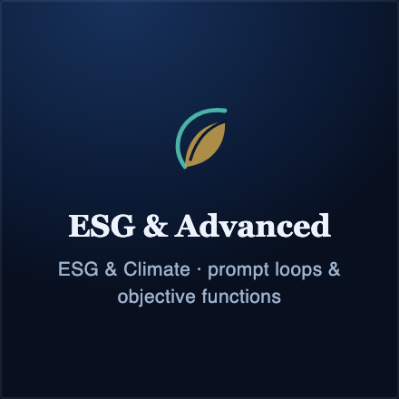
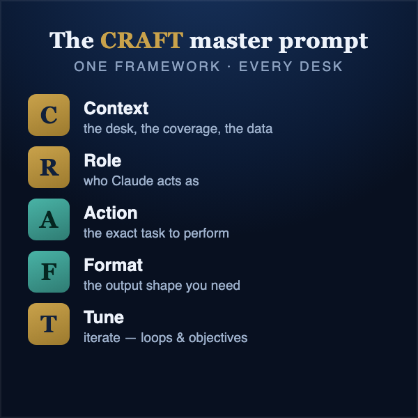
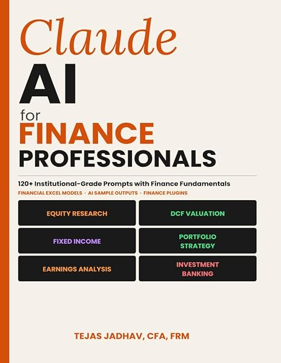
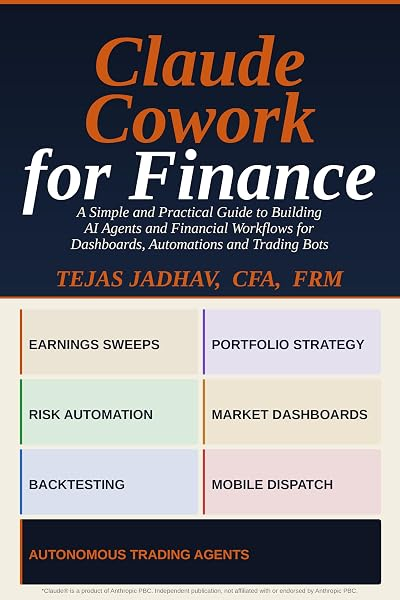
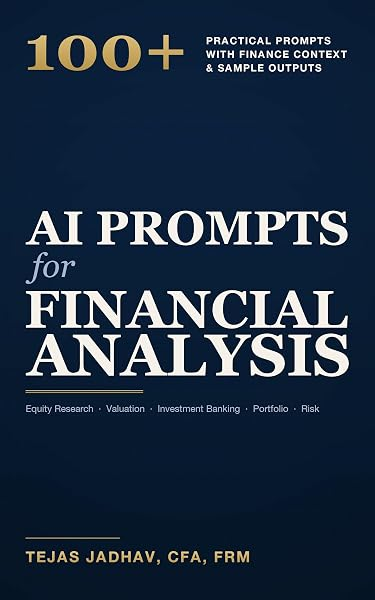
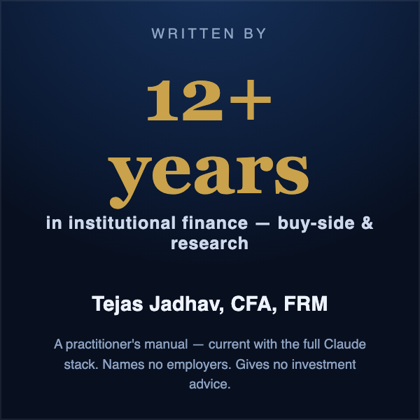

Research & Deals
Build comps and DCF drafts, interrogate a 10-K, turn transcripts into a thesis memo — with copy-ready prompts.

Build comps and DCF drafts, interrogate a 10-K, turn transcripts into a thesis memo — with copy-ready prompts.
Stress a portfolio narrative, structure scenarios, work through credit. Macro Risk, Quant & Fixed Income.

Draft IPS logic, frame allocation reasoning, prep board-ready material across four allocator desks.

Analyze disclosures, then go further — prompt loops and objective functions that make it repeatable.

No breathless predictions. No toy examples. It assumes you already work in finance and respects your time. Every chapter is a desk you recognize — and it ends in prompts you can run today: build a comps workflow, take apart a 10-K, structure a risk narrative. It teaches process and judgment, not tips and not advice. And it's honest about scope — there's a chapter on what Claude can't do well yet, so you deploy it where it actually helps.
 Claude AI for Finance Professionals |
 Claude Cowork for Finance |
 AI Prompts for Financial Analysis |
|
|---|---|---|---|
| Best for | Analysts, PMs & associates who want Claude doing desk work | Teams building AI agents & finance workflows | A broad prompt reference across roles |
| Core content | 11 institutional desks + the Claude ecosystem | Agents, dashboards, automations & trading bots | 100+ prompts + sample outputs |
| Prompts | 120+ institutional-grade (numbered + flagship CRAFT + master) | Capability walkthroughs | 100+ practical prompts |
| Depth | Institutional / practitioner | Practitioner, build-focused | Accessible, all levels |
| Start here if… | You work on a finance desk today | You want to build & automate | You want breadth first |

Written by Tejas Jadhav, CFA, FRM — 12+ years of institutional buy-side and research experience. This is a practitioner's manual, not a bystander's overview. Part Two keeps it current: the Claude model family, the Claude.ai platform, Claude Code for quant work, and Cowork, Plugins & MCP. It names no employers and gives no investment advice — it teaches you a process you own.